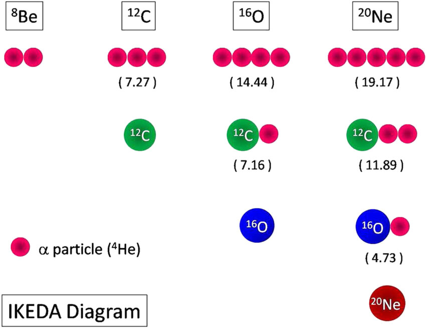

welcome to my webpage ..., you can ..... If you ...
Contact
刘博然 (Boran Liu)
Nuclear Theory and Nuclear Astrophysics Group,Sun Yat-sen University
liubr7@mail2.sysu.edu.cn
+86 198xxxx2572
中国广东省珠海市香洲区唐家湾大学路2号中山大学
Research
Research interests
1.Variation After Projection of HFB
Variation After Projection (VAP) combined with the Hartree-Fock-Bogoliubov (HFB) theory is a powerful method in nuclear physics, particularly for describing nuclear structure and the interplay between pairing correlations and deformation effects in atomic nuclei.
Background and Motivation:(1)The Hartree-Fock-Bogoliubov (HFB) theory is a cornerstone of nuclear structure calculations. It effectively incorporates both mean-field effects and pairing correlations, allowing for the description of phenomena like superfluidity in nuclei.
(2)However, the HFB wavefunction typically breaks certain symmetries of the nuclear Hamiltonian, such as particle number, angular momentum, and parity, to simplify calculations. This symmetry breaking introduces artifacts that can obscure physical insights.
(3)The Variation After Projection (VAP) method addresses this issue by projecting the symmetry-restored wavefunction onto states with definite quantum numbers (e.g., particle number or angular momentum) before optimizing the wavefunction. This is more accurate than the simpler Projection After Variation (PAV) approach, where symmetry projection is performed only after the variational minimization.
Applications in Nuclear Physics:
(1)VAP-HFB is widely applied to study nuclear clustering phenomena, pairing correlations, and shape coexistence.
(2)It is particularly useful in describing light nuclei, where clustering effects are pronounced (e.g., alpha clustering in 12𝐶).
(3)In heavy nuclei, VAP-HFB helps investigate deformation, rotational bands, and pairing gaps.
2. Ab initio method of Nucleus Clustering Phenomena
Nuclear clustering phenomena refer to the formation of substructures, or clusters, within atomic nuclei, where groups of nucleons (such as alpha particles 𝛼) behave as coherent units. Understanding clustering is critical for explaining nuclear structure and reactions, especially in light nuclei like 12C and 8Be.
An ab initio approach aims to describe such phenomena starting directly from the fundamental interactions between nucleons, without empirical fitting to specific nuclear properties. These methods strive to solve the nuclear many-body problem using realistic nuclear forces derived from quantum chromodynamics (QCD) or nucleon-nucleon interaction models.

图1. Ikeda-diagram
The study of nuclear clustering phenomena holds significant importance in nuclear physics, astrophysics, and nuclear reaction mechanisms. It reveals the strong correlation among nucleons within nuclei, bridging the gap between microscopic nucleon-nucleon interactions and macroscopic nuclear structure properties. Clustering is crucial for understanding nuclear reaction processes, element synthesis, and stellar evolution. Moreover, research on clustering drives advancements in experimental techniques and theoretical models, offering new perspectives on nuclear matter behavior under extreme conditions and highlighting universal emergence phenomena in complex systems. This field not only enriches fundamental science but also has broad applications in nuclear energy and astrophysics.